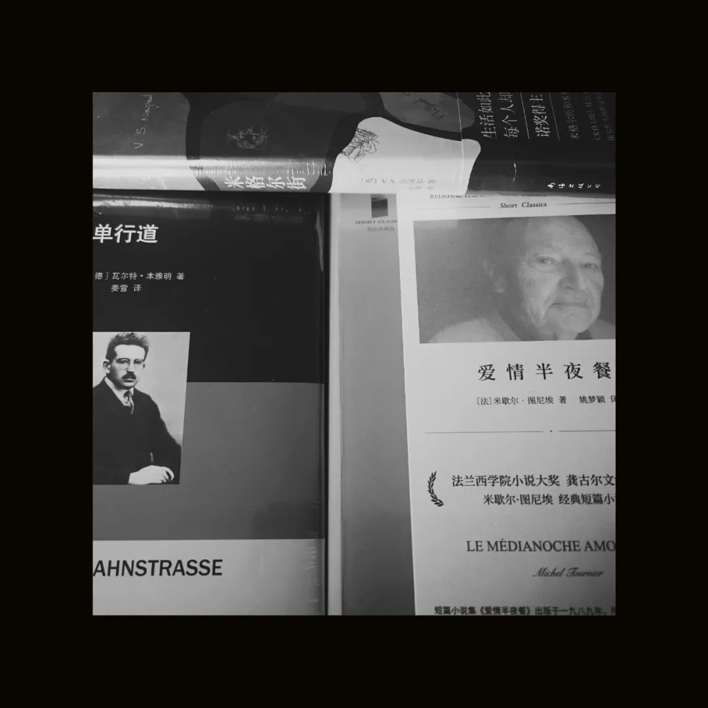

末班车没有固定的路线，带着人在落日的时候飞车绕行。像蜜蜂出行的时候，为了交互而跳的8字舞。进入不同的时期，会明显地感觉到一个人气质的变化。比如在有考试和烦心事发生的时候，会明显地觉得这个人散发着一股孔乙己气质我在最忙的时候，应用收纳里有两个分区的奇怪软件。还蛮不一样的。看一些以前朋友们留下的痕迹，即使这些账号上有那些人很多现在的信息今天在哪里吃了饭、考试考了多少分，看了半个小时也就觉得"噢这个人还是那样"虽然很熟悉，甚至也可以不假思索地知道，今天还是吃的那些食物；哪一餐没去吃是回家了吗还是又大脑共济失调作息紊乱错过了这一餐。看了半个小时就自然地觉得“够了”，不用再看了。像是过去的半个小时去做了一个扫墓人，打扫打扫过个清明，转身又回到普通生活。再看下去就不是礼节礼貌地扫墓，而是盗墓。
有个人，这个人呢有点胖，但是人很善良。一直以来都很善良，别人有什么忙都会尽可能帮，而且遇到地上掉了的花还会捡起来。那么，请问ta能不能现在去煮碗泡面如果有猛烈的欢喜，我是说如果的话，其实不太介意之后之前的麻烦甚至抑郁双相乃至斯德哥尔摩。当然真的去斯德哥尔摩的话，又是为了其他的事了杜拉斯写的《琴声如诉》里谈到，生活里很多人谈恋爱其实是用「余情」，不是用自己最深的感情。余情有一种飘流性，互相之间的流动性和可替代性也很大，可能外部压力一来，两个人就散掉了，但人可能在这个不断失去的过程中逐渐体悟到生命的轻与重，体会到人生里最珍贵的感情。
这是今天《人物》的访谈里，谈论为什么相爱变得越来越难，受访者阐释的一段话。有一位旧识朋友的回归，再次提醒我今年又到年末了，迷离的2020年只有两个十天了。今年的100图将会如约而至，好像每个人的这一年过得都有些不一样。也许是过往多少年的生活都太在轨迹之中，而不确定性是随着年岁增长越发喜欢排去的东西。因此打算总结一下今年看了一些什么书。专指文史哲美学建筑，自科文献不列。大致按照时间。Waterfrontpromenade design : urban revival strategies / edited by Thorbjörn Andersson人性的枷锁 Maugham, William SomersetAnarea of darkness，Naipaul, V. S标题写的，地铁看书错过了要下的站，就发生在看本雅明的这本《单行道》还挺好玩的。有几本到了我这但是还没看。双十二的书估计要到明年才能看了，那就明年再写。还有几本双十二之前，现在在南海的转运船上。没有看但是2021来之前应该会看完。不过没事，看完多少算多少，现在也没有人逼我到底要看多少书，也没有要可以从里面玩出什么比较与批评的花样出来。就只是看书的看书。包括正在读的《单行道》，今年已经看完了35本，在读1本，等待去读3本。转运中的先不算吧。这种算其实没有必要，也许一阵台风就都和那些历史文物一起沉到了南海底，过上一段时间也成了沉船文物就像黑石号一样。到底读多少书其实不太重要。看到有朋友分享罗振宇的返校演讲，说读多少本书并不重要，重要的是在读书的时候解决了多少问题。果然有商业头脑的人就是不一样，我都不对于在这些书里面找解决方案抱有什么希望。只是觉得看书，好像也有很多人在遭遇着和我差不多的麻烦，大家互相比惨。不过疫情期间拿下了《思考，快与慢》和《卡拉马佐夫兄弟》这两本久久没能看完的大部头，还是很有成就感的。也不可能说，到底哪些书就会更推荐一些。我觉得这不像一张照片那样，说我可以在年度100图里边找出我最喜欢的5张出来。书就是书。至于要不要写书评，或许还是等散落在众多公众号碎碎念以及我的日记里来得比较自由散漫。